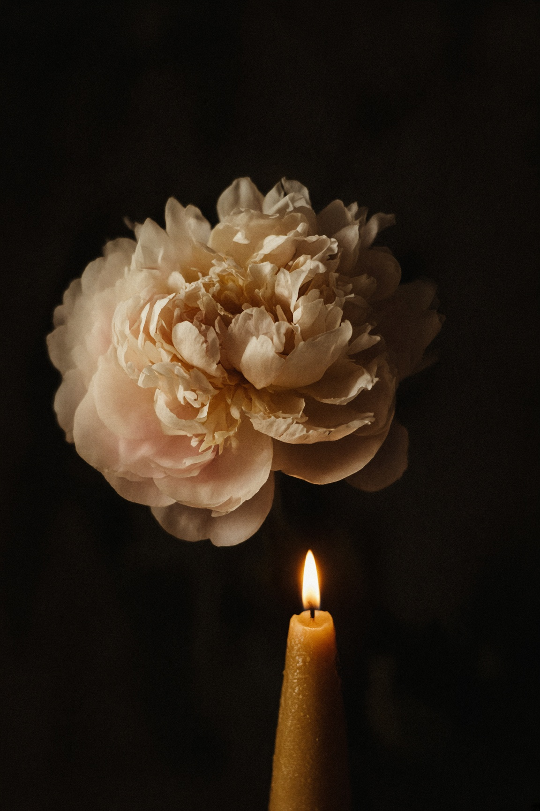
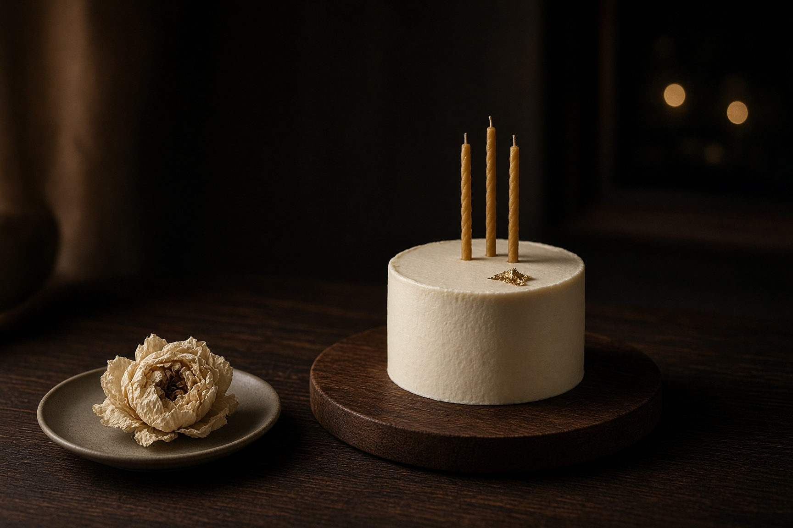

写给
刘金
生日快乐
这一夜，只为你留着。
今夜
刘金
有些话，放到白天就说不出口。所以我把它们留到你的生日夜里。
「金」这个字，本来就在你的名字里。新的一岁，不必去追光。你自己就是。
这一年你走过的路，有风，也有光。那些没被人看见的时刻，我替你记得。
愿你被好好爱着，也被自己温柔对待。心里有金，脚下有路。岁岁常欢喜。
小白

三支烛
点亮它们
一支给你已经走过的路，一支给此刻，一支给还没来的一年。
轻触烛火
一盏灯
把愿望放进去
写一句只说给自己的话。灯会升起，这句话留在这一夜。
愿这一年，事事如金。
花会落一会儿，然后夜里会安静下来。
给刘金 · 生日夜